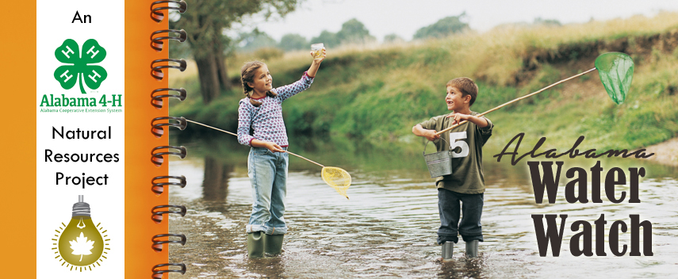
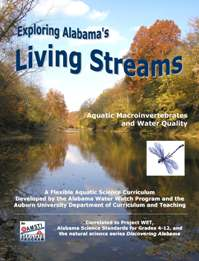

Enviromental Education
- AWW 4-H Program
- Educator Workshops
- Exploring Alabama’s Living Streams
- Educator Dashboard
- Message from the Director
Alabama 4-H Alabama Cooperative Extension System

The 4-H Alabama Water Watch (AWW) Program is versatile and can be used for enrichment, in-school, after-school, community, and specialty clubs, and 4-H individual study. It can also be incorporated into a service project.
4-H AWW will help youth gain confidence and have fun with science, master a new skill, make a difference in their communities, gain awareness of natural resource issues, and enjoy time outside! To use 4-H AWW curriculum in the classroom or in a 4-H Club setting, educators (formal and volunteer) must be certified by AWW as a youth trainer or must work with existing AWW trainers to train 4-Hers.
- AWW 4-H Program LINK
Educator Workshops

The 4-H Alabama Water Watch Program will once again offer several opportunities for teachers and volunteer educators to be certified to use the Exploring Our Living Streams Stream Biomonitoring and Water Chemistry Monitoring Curriculum (EOLS) in 2017.
The Exploring Our Living Streams Curriculum provides hands-on activities for teaching students about watershed science and water monitoring. The 4-H AWW Program provides support to clubs and classrooms as they use the curriculum and collect water data.
During each 2 day EOLS workshop, participants are certified as water monitors (water chemistry and stream biomonitoring) and learn how their students can be certified as 4-H AWW Water Monitors.
Participants who complete an EOLS workshop will receive:
- Certification as AWW Water Monitors
- A copy of the EOLS curriculum
- Access to EOLS Digital Resources (presentations and other support materials)
- A DVD of Discovering Alabama videos that are correlated to the curriculum
- Access to monitoring equipment
- Support with implementation of the EOLS curriculum, including certification of students as 4-H AWW Monitors
- CEUs from Auburn University
- Food and lodging during the workshop
- Additional programming specific to the host environmental center (including activities such as farm tours, boat rides, and fun hikes!)
- Workshop Locations and Dates LINK
Exploring Alabama's Living Streams

Exploring Alabama’s Living Streams has a flexible design to accommodate the unique needs and teaching styles of educators. That is accomplished by the following means:
STRUCTURE: The curriculum is structured to be completed in about one week. Many concepts and ideas presented, however, are a natural platform for more in-depth investigation, or incorporation of additional science, math, and social studies concepts. The curriculum can therefore be used as a foundational guide for longer time periods by bringing in materials that complement classroom learning objectives.
MATERIALS: Curriculum material is arranged in modules, which build on each other and culminate in a structured field trip. The "Exploration before Explanation"" concept can easily be adapted, if desired, by taking the field trip first, collecting data, then returning to learn about what was done and why.
ACTIVITIES: Four activities accompany each module. The difficulty and/or time commitment varies with activity. Educators can choose which activities best suit the abilities of the students and class goals.
WORKSHOPS: Three types of workshops are available for educators. The first two are the formal AWW Stream Biomonitoring and AWW Chemistry workshops. The third is a professional development workshop designed around the Living Streams curriculum. All three workshops carry Continuing Education credits. The professional development workshop also carries AMSTI credit. We recommend all three of these training workshops to get the most use out of the curriculum.
COMMUNITY CONNECTIONS: The curriculum is designed to use the help of local Alabama Water Watch volunteer monitors. A number of organizations are often available to work with science classrooms as well, including local Environmental Education (EE) centers. For more information see Linking to "Local Experts"" in the Community and Environmental Education Centers in Alabama.
ADAPTING TO ELEMENTARY GRADES: The curriculum targets middle and high school students; however, elementary students enjoy getting their feet wet as well. The Internet Resources section of the curriculum can help locate activities applicable for younger students.
-
Citizen Science Data Simulation
Citizen Science Data Simulation
This Alabama Water Watch (AWW) Citizen Science Data Simulation (CSDS) provides students and other users, with interactive activities to learn about basic features such as online data entry and simple water data graphs to help citizens analyze and interpret the data collected by volunteer monitors. In addition to collecting data, data analysis and interpretation are key ingredients for successful watershed stewardship. AWW developed the CSDS considering that many monitors, including students, are intimidated by this aspect of citizen science, and therefore do not utilize the AWW Water Data Tools. Throughout the CSDS sessions, users will learn about water quality standards, optimum values for aquatic life, and tendencies for some of the water variables tested by AWW monitors.
The AWW CSDS was developed using a collection of real data collected by AWW volunteers from distinctive sites in order to create a variety of water quality conditions for a fictional watershed. The watershed includes streams, a lake and the coast. Water chemistry data (AWW water variables: air and water temperature, alkalinity, dissolved oxygen, hardness, pH, salinity, Secchi depth and turbidity) for a 30 month period is included in the CSDS database. The CSDS is especially helpful to monitoring groups that are just beginning to collect data and therefore do not have the multiple years of data needed to identify trends and abnormalities in water quality.
Message from the Director
Thanks to an army of dedicated AWW citizen volunteers, 2016 turned out to be a good year for AWW! 2016 was our first year under the directorship of Dr. Srivastava, who took over the reins of the AU Water Resources Center in mid-2015. Dr. Srivastava put upgrading our websites and our database as top priorities, and thanks to his efforts and those of the good folks in ACES-Ag Information Technology and AU Communications and Marketing, and especial thanks to Sergio and Jim Johnson, whose long hours put in to upgrade the AWW database, things are looking good! As I said at our AWW Annual Meeting, we at AWW are lucky to have a person of Dr. Srivastava’s caliber (Butler-Cunningham Eminent Scholar in the College of Agriculture, Professor in the Department of Biosystems Engineering, Distinguished Engineer Award recipient from the Alabama Section of the American Society of Agricultural and Biological Engineers) – he elevates all that we do – thanks Dr. S!
A major loss to the AWW Program was the loss of Miss Rita, AWW cat-herder extraordinaire – we continue to miss her. Initially, we thought that it was the onset of Armageddon, but thanks to our amazing staff, we survived! Special thanks to Miss Sydney Smith, who stepped in without hesitation to help fill the shoes of Miss Rita (note, Sydney is partial to E. coli see Program Staff)
AWW conducted 98 workshops in the past year, thanks in large part to our dedicated citizen trainers! With 472 new water watchers on the ground, we will get even closer to realizing our vision of having a monitor on every stream, river, lake, bay and bayou in the state.
And thanks to support from the Alabama Cooperative Extension System and the work of Miss Mona through 4-H AWW, 4,000 young Alabamians have learned about this state’s aquatic treasures and how to preserve and protect them.
Other notable achievements of the past year include:
- Instructional videos on AWW monitoring – great job Samantha and Rita! – see: AWW Instructional Videos
- AWW Lifetime Achievement Award – Dick and Mary Ann Bronson – CONGRATS! see: http://wp.auburn.edu/aww/aww-lifetime-achievement- awardpresented-to-dick-and-mary-ann-bronson/
- America’s Amazon – Alabama the Beautiful Infographic, great job Jennie Powers! – see: http://wp.auburn.edu/aww/aww-infographic-2-0/
- Several AWWsome AWW trainers-monitors-supporters featured on MeOWW see: http://wp.auburn.edu/aww/
- AWW promotional video, NICE job Josh Woods!
Lastly, AWW is excited about 2017 – it’s our 25th Anniversary! We’re working on a special gathering to celebrate 25 years of watershed stewardship – we’ll keep you posted! I want to personally thank all of you for all that you do in support of the AWW Program, and preserving our treasured Alabama waters for all to enjoy! Have a joyous and blessed holiday season!
Eric Reutebuch, Director
2016 at a glance…
- 98 Workshops Conducted
- 472 Individuals Certified
- 2,800 Water Data Records Submitted
- 4,000 Youth Educated
2016 at a glance…
- Catch Up on the Latest AWWareness ArticlesLINK